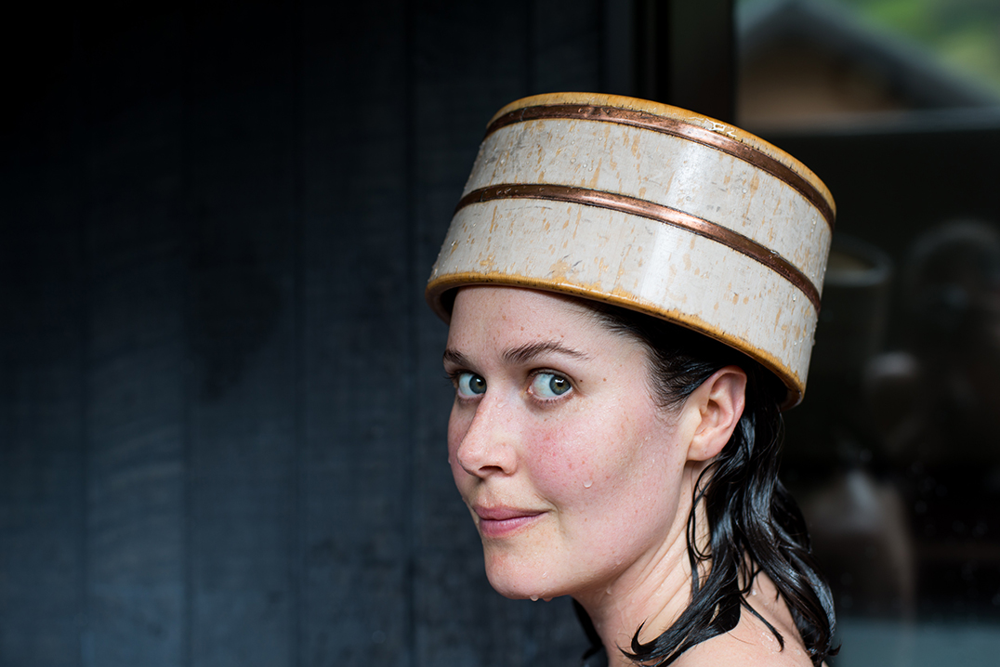

Features - The Boweress
Time to Onsen
5 November, 2017
Hakone is a forest village set on a clear water river providing one of the best relaxation experiences I’ve ever had. Basically anything that tells me I’m going to feel hella blissed out I will pay good money for these days and the expense wasn’t even that steep!
At just over an hour to escape Tokyo I decided to venture to this place offering supreme relaxation in search of finding my Zen in a country that thrives on work life balance. Hot Spring (onsen) is a traditional past time in Japan with thousands across the country providing all types of healing and health benefits. I chose this one due to its proximity to Tokyo and choice of private rooms. I travelled there in a ‘romance car’ train, whatever that means but it really did add to the romantic notion of escaping the grind for a relaxing break.
There is a public onsen yet I chose the private for a first timer. Onsen is not only used for relaxation purposes but metabolism stimulation, skin cleansing and complexion hydration, some even claiming to heal sore muscles and bruises. It’s hot but not too hot, and with claims like before you’ll be willing to endure the heat for good outcomes. I used my onsen like a dipping pool, soaking then cold showering to increase the blood flow stimulation whilst keeping hydrated.
The beauty of this onsen was that there were private rooms, being new to this I wasn’t ready to go to a shared bath. They supply you with Shiseido body and hair care products, a lovely kimono and niceties. It truly is a place you can drift away and experience a level of relaxation like no other. To heighten this I had a massage afterwards, surprisingly fully clothed yet badass. My boyfriend removed his shirt to which they shielded their faces shouting no no back on back on, don’t think he’d ever experienced that kind of response before. The massage was legit, strong and got to all the right spots with none of the fluff. It was safe to say I didn’t want to leave…ever!
You could definitely spend a week in this town and just Zen out. I felt like even if there had been an earthquake I would have been fine with it as I was uber relaxed. Upon boarding the Romance car home, I downed a punnet of Fuji strawberries (which tasted like candy strawberry flavour!) and slept all the way back to Tokyo.
